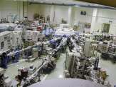
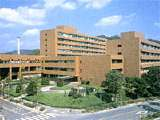

博士課程修了・学位取得者 (Ｈ６〜Ｈ１９年度): ２０名
| 研究者 |
名古屋大・助教授、広島大・助教授、大阪府立大・講師、広島市立大・助手、広島大・助手、高エネ研・助手、日本原子力研究所・研究員、呉高専・教授、宇部高専・講師、広島大・PD、東大物性研・PD |
| 技術者 |
旭化成、毎日新聞、アプライドマテリアル、キャノンアネルバ、カネカ |
| 教育者 |
高等学校・教員 |

大学附置研究所 (HiSOR)
|

教育研究機関
|

国立研究所 (高エネ研)
|
修士課程修了者 (Ｈ４〜Ｈ１９年度): ５７名
| 技術者 |
マツダ、テラプローブ、ウシオ電機、情報技術開発、三菱重工、三菱電機、ＨＯＹＡ、エルピーダメモリ、日東電工、信越化学、住友金属、アネルバ、昭和電線、村田製作所、山陽鉄鋼、日本航空電子、東京エレクトロン、島津製作所、NTT西日本、関西エックス線、住友特殊金属、ローム、シチズン、京セラ、ULVAC、広島大、日本フィリップス、GE横河メディカルシステム、NEC東広島、アークレイマーケティング、トヨタ、日本電産、ソニー大分、NECエレクトロニクス、TDK、関西ツーカーフォン |
| 教育者 |
高等学校・教員 (7)、中学校・教員 (1) |
学部四年卒業生
約 ８ 割が修士課程進学。
|